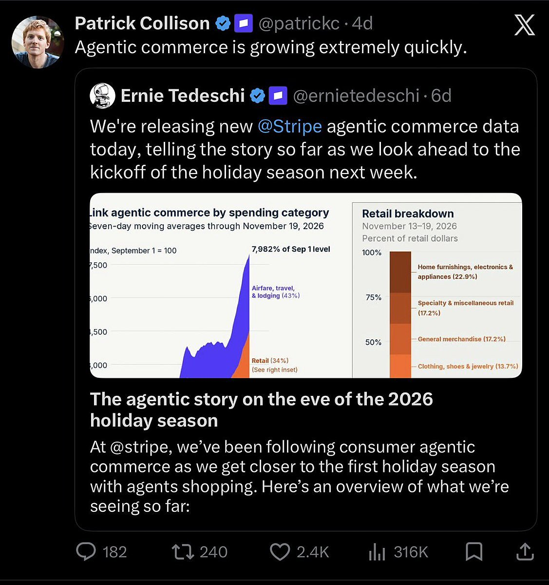
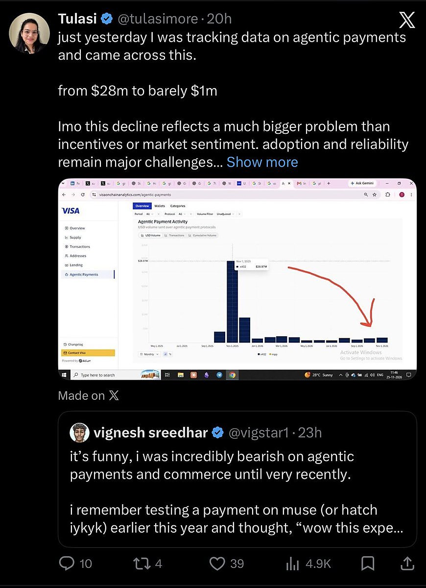
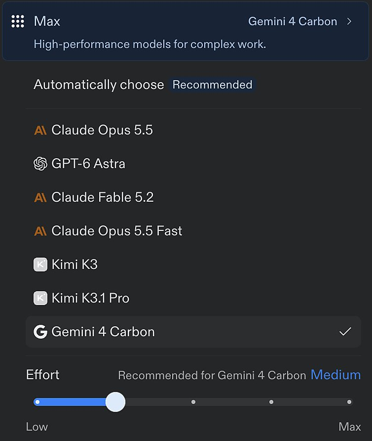
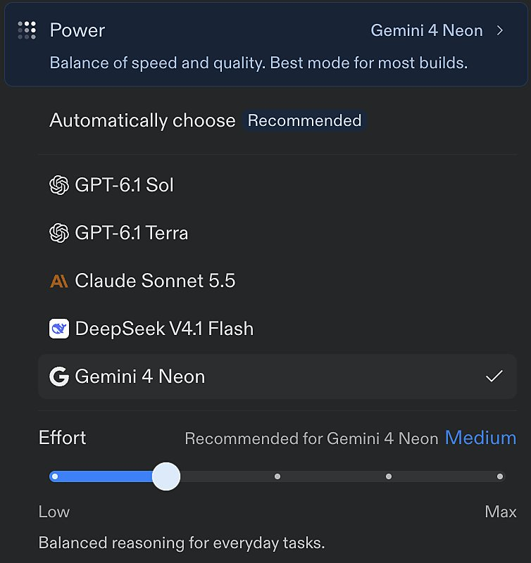
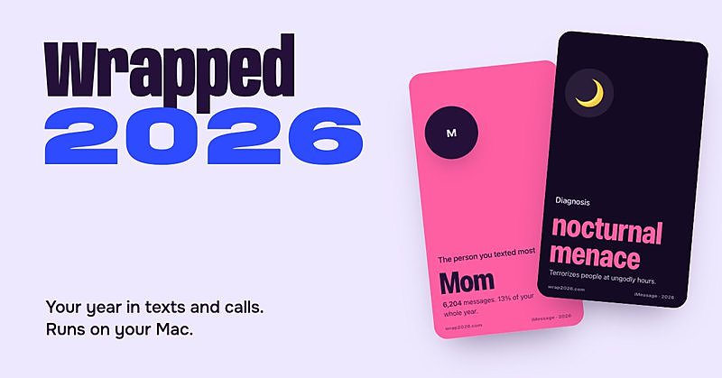

AI 日报 · 11月28日
代理走进真实工作，入口与验证并重
Builder 讨论聊天入口、代理支付和服务交付；一场公开访谈反思软件工厂与创造力，Trending 聚焦代理工具技能。
代理工作流
多模态交互
服务交付
5
Builder 动态
3
上榜仓库
1
深度对话
今日要点
深度对话
软件革命与创造力复兴
Latent Space 公开访谈 OpenAI 的 Thariq Shihipar，讨论软件工厂提高产出后，人是否会把能力投入更个人化的创造。以下是依据公开访谈的主题概括。
观看完整访谈
节目以“革命与复兴”为线索，讨论代理、软件生产和创造力之间的关系。
Builder 动态
支付、交互与服务业的代理入口
Swyx｜代理支付是值得提前下注的议题
认为代理支付到 2028 年会成为分歧很大、却很重要的产品议题；这是作者的前瞻判断，并非已经发生的行业事实。


Nan Yu｜聊天已扩展为多模态工作入口
指出语音、图片输入与通过指令生成网站都可视作聊天交互，并称这些能力已经可以在 ChatGPT 中使用。
Amjad Masad｜在 Replit 试用 Gemini 4
称赞 Google 的 Gemini 4，并邀请用户在 Replit 中试用；评价来自 Replit CEO 原帖。


Aaron Levie｜服务公司可围绕代理重组交付
认为领域知识仍关键，但代理可能放大服务业的项目交付能力；文中的十倍是作者观点。
Nikunj Kothari｜用本地脚本提醒节日问候
分享基于本地 iMessage、WhatsApp 数据库的脚本项目，称其无需 AI 且可在本地运行；使用前应自行检查脚本及数据权限。

GitHub Trending
安全研究、命令行与设计技能
11 月 28 日 GitHub Trending 快照；星标与 Fork 数来自当日 GitHub API。
今日思考
交互统一之后，交付如何验证？
今天的 Builder 观点涉及聊天入口、代理支付与服务交付。把功能接入已有流程只是起点；更值得追踪的是每一步的权限、结果检查与人工接管方式。
今天可做
挑一个重复性服务任务，标出代理可执行的步骤，并为每一步写下可核对的完成条件。
参考来源